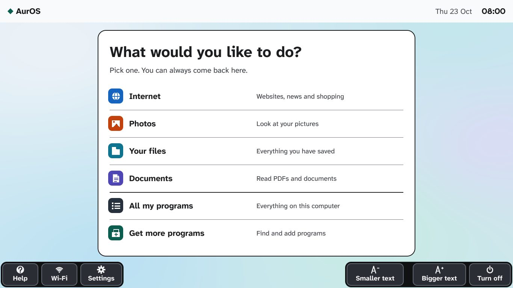
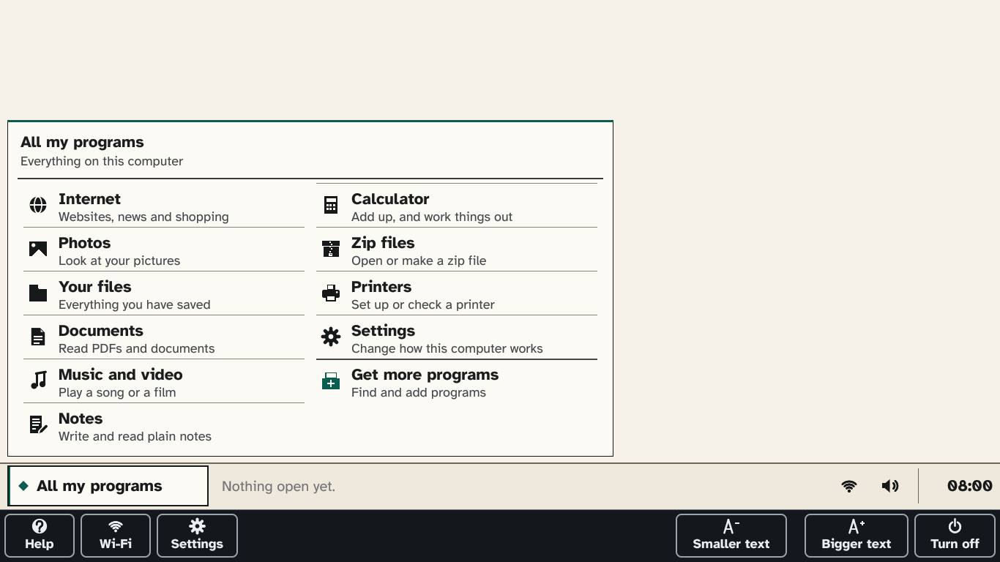
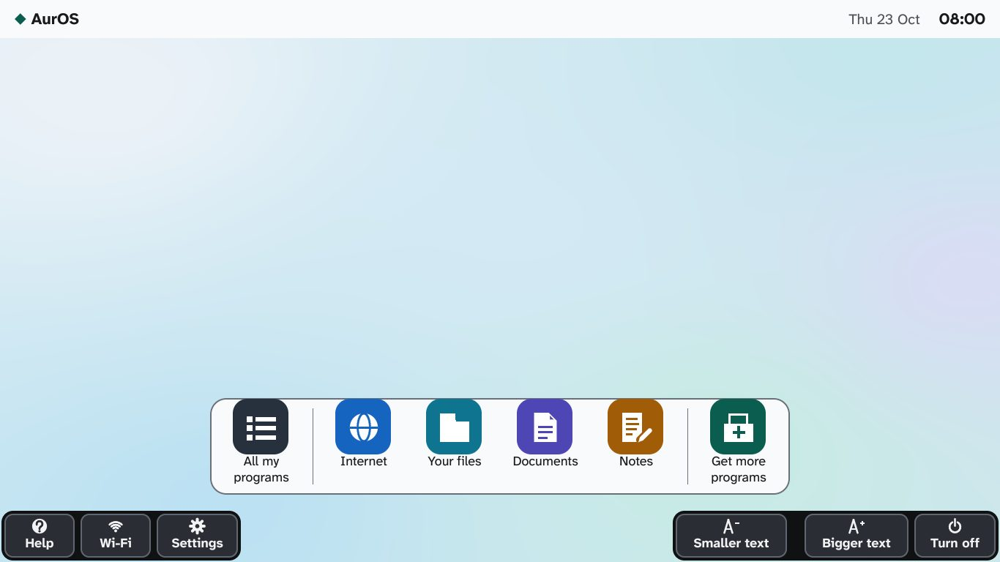
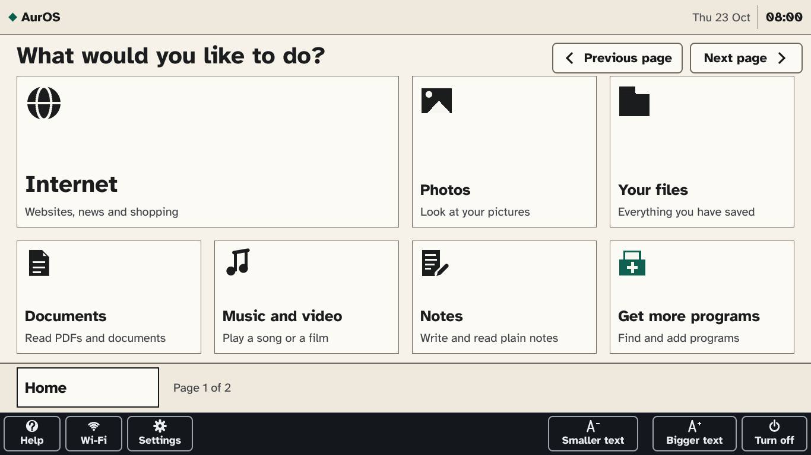
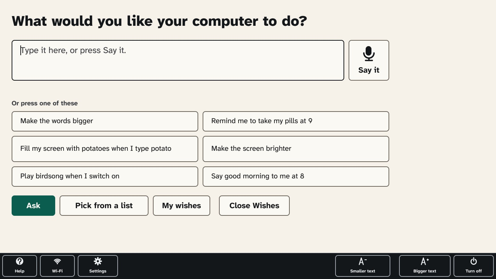

You shouldn’t need help to use your own computer.
AurOS is a free, simple new way to use the one you already have.
Not sure which Windows you have? Press Get AurOS. Setup checks, and changes nothing if it can’t go on.
AurOS is made for Windows 10 or 11, and this computer may have an older Windows. AurOS has not been tried on older Windows, so ask someone who knows computers before you go on.
Open this page on your Windows computer.
Open this page on the Windows computer you want to change.
AurOS can’t go on this computer.
AurOS goes on a Windows computer, not a phone. Send yourself the link:
This is a Mac, and AurOS goes on a Windows computer. Send yourself the link:
This is a Chromebook, and AurOS goes on a Windows computer. Send yourself the link:
This computer isn’t running Windows, and AurOS goes on a Windows computer. Send yourself the link:
It has a different kind of chip inside (called ARM, as in Snapdragon laptops), and AurOS only works on the usual kind. Have another Windows computer? Send yourself the link:
It has the older, 32-bit kind of Windows, and AurOS needs the 64-bit kind. Have another Windows computer? Send yourself the link:

Is this safe? Who made it? What does it cost?
Is this safe?
AurOS is made to keep Windows and your files, and to let you go back. Any change to a drive carries some risk, so copy the photos you treasure onto a memory stick first. Edge and Windows will warn you about the file, because few people have downloaded it yet and it has no company name on it. Step 1 shows each warning and what to press.
Who made it?
One person, with the help of AI software. Not Microsoft. Anyone can read the source code. Write to aarohkandy@gmail.com.
What does it cost?
Nothing. No ads, no subscription.
- Free, with no ads and no subscription.
- Windows and your files stay, and you can go back.
- Every button says what it does.
- Help and Bigger text never move.
- AurOS will never phone you.
Make it feel like home.

Like Windows
A bar along the bottom, just like now.

Like a Mac
Your programs in a row along the bottom.
Big and simple
Big buttons. Nothing ever gets hidden.

One thing at a time
Each program fills the whole screen.
Three steps. About 25 to 60 minutes.
AurOS needs at least 28 GB of empty room on your Windows drive. Setup checks before it changes anything.
-
Step 1: Download it
Move the mouse over the file. Press the three dots, then Keep. Edge asks again: press the small arrow beside Delete, then Keep anyway.
Do not press Delete. If you did, just press Get AurOS again.
Using Chrome or Firefox? Its words are here.
-
Step 2: Say yes to Windows
Press Open file. If Windows shows a blue box, press More info, then Run anyway. Then press Yes, the white button.
-
Step 3: Pick a look, then install
It restarts once, by itself.
If your antivirus takes the file, or Windows says Smart App Control blocked it, nothing has been changed. What to do
If a page that says 404 or Not found opens instead, the download isn’t ready. Nothing is wrong with your computer. Press the back arrow at the top left of your browser and try again in an hour. Is AurOS working today?
Changed your mind? Go back.
Press No, go back to Windows. Nothing is deleted.
Does everything work?
The honest bit.
- Tried so far on a virtual Windows 11 computer, not a real one.
- Windows programs don’t run in AurOS.
- Any change to a drive carries some risk. Copy your photos first.
- Wishes isn’t switched on yet.
Not in AurOS yet
One day, you’ll just ask.
- “Remind me to take my pills at 9”
- “Play birdsong when I switch on”
- “Say good morning to me at 8”
Psst. Type the word .

Questions.
Will I lose my files?
AurOS is made to keep your files, but any change to a drive carries some risk. Copy the photos you treasure onto a memory stick first.
Do I need to be good with computers?
No. Every button says what it does.
What if I get stuck?
Print the one-page guide for whoever helps you. AurOS will never phone you or ask for a card number, a password or gift cards.
Ready when you are.
AurOS goes on a Windows computer. Send yourself the link and open it there.